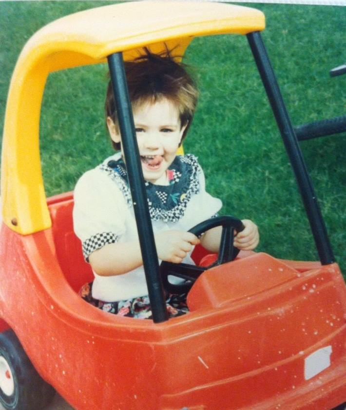
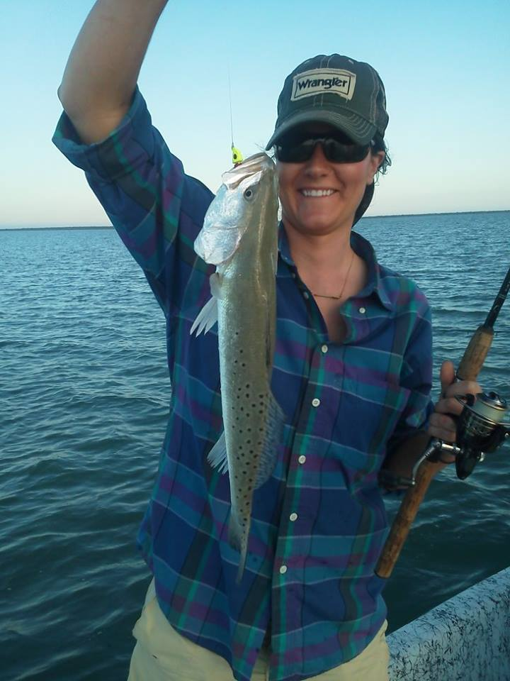
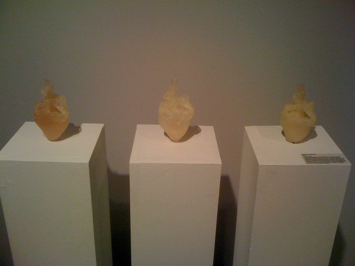
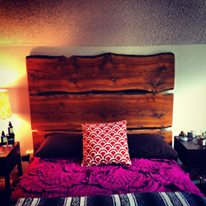
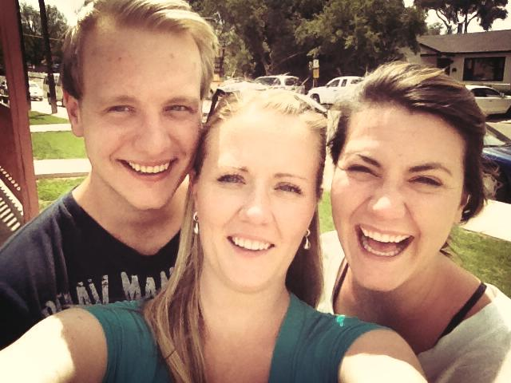

About Me
More Photos
Click Here to read more about me.
Photos
These are more photos from my life.

Cut my hair off when my Grandma got dignaose with cancer. Took the photo at the top of Independence Pass the first time I ever drove over it. Moved to Aspen shortly after Grandma passing away.
Year 2015

We used to play drive up McDonnalds with this car. This was pretty recent after my sister and I decided to play beauty salon and she chopped all my hair off. Keeping the 90s alive with this outfit!
Year 1993

Most of my mom's side of the family, minus my Uncle Perry and Aunt Ana and their 4 kids. This was a pretty good looking outfit, if I do say so myself purple and stripes with red tights, born to be weird!
Year 1997

We go fishing everytime I visit my Dad on South Padre Island, TX. My dad still lives in South Texas. I grew up on the water and then landlocked in Colorado the rest of the time.
Year 2014

This is one of my art peices I made in college that one awards, which was the first time besides elementary school that I won an award for something I made. The are cast sheep hearts that I got from the butcher school at CSU and I made a mold and cast a polyurthane resin into it and tried to produce similar results to enjection molding by constantly moving the mold with the resin inside as to create a thin layer like skin to evoke a more glass like texture.
Year 2011

This was a bedframe I made for one of my friends out of reclaimed barn wood. It started as 1 peice of wood that I got for about 5$ and then the hardward and sanding materials. Total it cost me about 25$ to produce and it was the first peice of funiture I sold.
Year 2014

This is me and my sister getting goofy.
Year 2016

This is my little big brother and older sister. They always did say I could have been the milk man's minus the fact that I looked so much like my Great Grandma.
Year 2014
Cut my hair off when my Grandma got dignaose with cancer. Took the photo at the top of Independence Pass the first time I ever drove over it. Moved to Aspen shortly after Grandma passing away. Year 2015
We used to play drive up McDonnalds with this car. This was pretty recent after my sister and I decided to play beauty salon and she chopped all my hair off. Keeping the 90s alive with this outfit! Year 1993
Most of my mom's side of the family, minus my Uncle Perry and Aunt Ana and their 4 kids. This was a pretty good looking outfit, if I do say so myself purple and stripes with red tights, born to be weird! Year 1997
We go fishing everytime I visit my Dad on South Padre Island, TX. My dad still lives in South Texas. I grew up on the water and then landlocked in Colorado the rest of the time. Year 2014
This is one of my art peices I made in college that one awards, which was the first time besides elementary school that I won an award for something I made. The are cast sheep hearts that I got from the butcher school at CSU and I made a mold and cast a polyurthane resin into it and tried to produce similar results to enjection molding by constantly moving the mold with the resin inside as to create a thin layer like skin to evoke a more glass like texture. Year 2011
This was a bedframe I made for one of my friends out of reclaimed barn wood. It started as 1 peice of wood that I got for about 5$ and then the hardward and sanding materials. Total it cost me about 25$ to produce and it was the first peice of funiture I sold. Year 2014
This is me and my sister getting goofy. Year 2016
This is my little big brother and older sister. They always did say I could have been the milk man's minus the fact that I looked so much like my Great Grandma. Year 2014